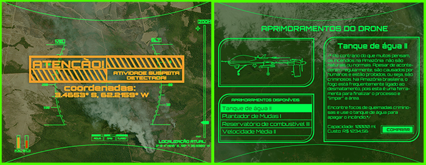

SOBRE
AMAZOOM é um simulador em VR em que o jogador controla um drone de monitoramento na floresta amazônica e atende chamados de socorro das equipes de monitoramento ambiental. Com uma temática atual e dados oficiais extraídos da The Nature Conservancy, AMAZOOM possibilita ao jogador explorar uma versão virtual da Floresta Amazônica e conhecer em primeira mão o impacto da devastação ambiental. Saiba Mais!